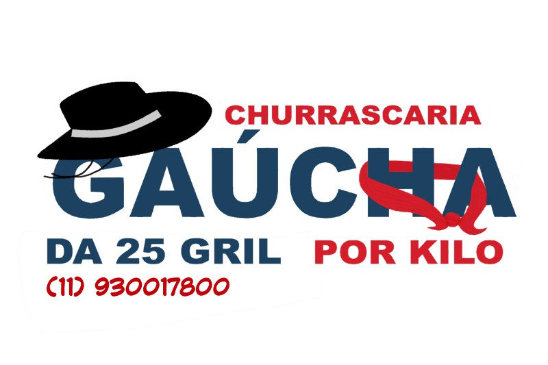

Como Operamos:
A Vontade:
Existem 3 opções de Pratos para Self-Service separados por Buffet.
Também temos 3 tipos de Marmitas para viagem separadas por Buffet.
Antes de se servir, favor comprar a ficha com o tipo de prato e bebida no caixa.
Por Kilo:
Caso queira pesar seu prato(ou marmita) por kilo, peça um prato por quilo
para um de nossos funcionários na ”Mesa de Centro”.
Pratos e marmitas por Kilo devem ser pesados no caixa e pagos na hora.
Sobre Nós
Sobre o autor